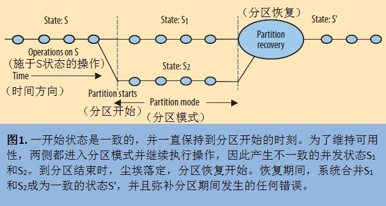

CAP 理论是分布式系统设计中的一个重要理论，虽然它为系统设计提供了非常有用的依据，但是也带来了很多误解。本文将从 CAP 诞生的背景说起，然后对理论进行解释，最后对 CAP 在当前背景下的一些新理解进行分析，澄清一些对 CAP 的误解。
CAP 理论诞生的背景
CAP 理论的是在“数据一致性 VS 可用性”的争论中产生。CAP 的作者 Brewer 在 90 年代的时候就开始研究基于集群的跨区域系统（实质上是早期的云计算），对于这类系统而言，系统可用性是首要目标，因此他们采用了缓存或者事后更新的方式来优化系统的可用性。尽管这些方法提升了系统的可用性，但是牺牲了系统数据一致性。
Brewer 在 90 年代提出了 BASE 理论（基本可用、软状态、最终一致性），这在当时还不怎么被接受。因为大家还是比较看重 ACID 的优点，不愿意放弃强一致性。因此，Brewer 提出了 CAP 理论，目的就是为了开阔分布式系统的设计空间，通过“三选二”的公式，解放思想，不要只抓着一致性不放。
理解了 CAP 诞生的背景，我们才能更加深入的理解 CAP 理论，以及它带来的启示。“三选二”的观点虽然帮助大家开拓了设计思路，但是也带来了很多误解。下面我们会逐一分析，首先来看一下 CAP 理论的解释。
CAP 理论的经典解释
CAP 定理是分布式系统设计中最基础，也是最为关键的理论。它指出，分布式数据存储不可能同时满足以下三个条件。
- 一致性（Consistency）：每次读取要么获得最近写入的数据，要么获得一个错误。
- 可用性（Availability）：每次请求都能获得一个（非错误）响应，但不保证返回的是最新写入的数据。
- 分区容忍（Partition tolerance）：尽管任意数量的消息被节点间的网络丢失（或延迟），系统仍继续运行。
CAP 定理表明，在存在网络分区的情况下，一致性和可用性必须二选一。当网络发生分区（不同节点之间的网络发生故障或者延迟较大）时，要么失去一致性（允许不同分区的数据写入），要么失去可用性（识别到网络分区时停止服务）。而在没有发生网络故障时，即分布式系统正常运行时，一致性和可用性是可以同时被满足的。这里需要注意的是，CAP 定理中的一致性与 ACID 数据库事务中的一致性截然不同。ACID 的 C 指的是事务不能破坏任何数据库规则，如键的唯一性。与之相比，CAP 的 C 仅指单一副本这个意义上的一致性，因此只是 ACID 一致性约束的一个严格的子集。
CAP 理论看起来难理解，其实只要抓住一个核心点就能推导出来，不用死记硬背。在出现网络分区的时候，
- 如果系统不允许写入，那么意味着降低了系统的可用性，但不同分区的数据能够保持一致，即选择了一致性。
- 如果系统允许写入，那么意味着不同分区之间的数据产生不一致，系统可用性得到保障，即选择可用性。
CAP 的新理解
CAP 经常被误解，很大程度上是因为在讨论 CAP 的时候可用性和一致性的作用范围往往都是含糊不清的。如果不先定义好可用性、一致性、分区容忍在具体场景下的概念，CAP 实际上反而会束缚系统设计的思路。首先，由于分区很少发生，那么在系统不存在分区的情况下没什么理由牺牲 C 或 A。其次，C 与 A 之间的取舍可以在同一系统内以非常细小的粒度反复发生，而每一次的决策可能因为具体的操作，乃至因为牵涉到特定的数据或用户而有所不同。最后，这三种性质都可以在程度上都可以进行度量，并不是非黑即白的有或无。可用性显然是在 0% 到 100% 之间连续变化的，一致性分很多级别，连分区也可以细分为不同含义，如系统内的不同部分对于是否存在分区可以有不一样的认知。
什么是分区容忍
在现实世界中，正常情况下分布式系统各个节点之间的通信是可靠的，不会出现消息丢失或者延迟很高的情况，但是网络是不可靠的，总会偶尔出现消息丢失或者消息延迟很高的情况，这个时候不同区域的节点之间在一段时间内就会出现无法通信的情况，也就是发生了分区。
分区容忍就是指分布式系统在出现网络分区的时候，仍然能继续运行，对外提供服务。注意，这里所说的仍然能够对外提供服务跟可用性的要求不一样，可用性要求的是对于任意请求都能得到响应，意味着即使出现网络分区所有节点都能够提供服务。而分区容忍的重点在于出现网络分区之后，系统仍然是可用的（包括部分可用）。
举个例子：使用 Paxos 进行数据复制的系统就是典型的 CP 系统，即使出现网络分区，主分区也能够提供服务，所以它是分区容忍的。再举个反例：使用 2PC 进行数据复制的系统没有分区容忍的特性，当出现网络分区时，整个系统都会阻塞。
可用性的范围
可用性其实很直观：每次请求都能获得一个（非错误）响应，但不保证返回的是最新写入的数据。换一个说法就是对于分布式系统中的每个节点，都能够对外部请求做出响应，但不要求一致性。
经常让我们疑惑的问题是衡量系统可用性的标准是什么？其实关键点在于可用性的范围，脱离了具体场景下的可用性范围是没有意义的。讨论可用性是要有具体场景来划分边界的，简单的认为某个算法是满足可用性要求其实并不严谨，因为在工程实现中会有很多的技巧去弥补修正。
举个例子：谷歌文档就是非常典型的 AP 系统，它在网络断了的情况下也能够使用。诀窍在于它在发现网络断了之后会进入离线模式，允许用户继续进行编辑，然后在网络恢复之后再对修改的内容进行合并处理。可以发现对于谷歌文档来说，用户的浏览器也是它系统的一个节点，当出现网络分区时，它仍然能够为用户提供服务，但是代价是放弃了一致性，因为用户做的修改只有本地知道，服务端是不清楚的。所以在这个例子里面，可用性的范围是包括了用户浏览器在内的，不是我们常规理解的分布式系统的节点一定就是服务端的机器。
值得注意的是在现实世界中，我们一般不会去追求完美的可用性，所以一般的说法是高可用，即尽可能保证更多的节点服务可用。这也是为什么 Paxos 这类的一致性算法越来越流行的原因之一。
一致性的范围
讨论一致性的时候必须要明确一致性的范围，即在一定的边界内状态是一致的，超出边界之外的一致性是无从谈起的。比如 Paxos 在发生网络分区的时候，在一个主分区内可以保证完备的一致性和可用性，而在分区外服务是不可用的。值得注意的是，当系统在分区的时候选择了一致性，也就是 CP，并不意味着完全失去了可用性，这取决于一致性算法的实现。比如标准的两阶段提交发生分区的时候是完全不可用的，而 Paxos 则保证了主分区的一致性和可用性。
经过上面的讨论可以发现，可用性的范围要求比一致性的范围要求要更严格，CAP 理论中的可用性要求的是整个系统的可用性，即使出现部分节点不可用也算是违反了可用性约束。而一致性的要求则没有那么高，发生网络分区的时候只要保证主分区数据一致性，也认为系统是符合一致性约束的。为什么这么说呢？因为当出现网络分区的时候，客户端只要通过访问主分区就能得到最新的值（访问超过半数以上节点，如果值都相同说明访问的数据是最新的），此时系统是满足 CAP 理论中一致性的要求的。
管理分区
网络分区是分布式系统中必然发生的事情，经典的 CAP 理论是忽略网络延迟的，但是在现实世界中，网络延迟跟分区密切相关。也就是说当系统在有限的时间内无法通信达成一致（网络延迟很高），就意味着发生了分区。此时就需要在一致性和可用性之间做出选择：选择继续重试就意味着选择一致性，放弃可用性；放弃数据一致性让操作完成就意味着选择了可用性。值得注意的是在分区的时候放弃数据一致性并不是意味着完全不管，一般工程实现会采用重试的方式达到最终一致性。
通过上面的分析可以发现，平衡分区期间可用性和一致性的影响是分布式系统设计中的关键问题。因此，管理分区不仅是需要主动发现分区，还需要针对分区期间产生的影响准备恢复过程。也就是说我们可以从另一个角度来应用 CAP 理论：系统进入分区模式的时候，如何在一致性和可用性之间做出选择。
管理分区有三个步骤：

- 检测到分区开始
- 明确进入分区模式，限制某些操作
- 当通信恢复后启动分区恢复过程
当系统进入分区模式之后，有两种选择：
- 选择一致性：例如 Paxos 算法，只有大多数的主分区能够进行操作，其他分区不可用，当网络恢复之后少数节点跟多数节点同步数据。
- 选择可用性：例如谷歌文档，出现分区时进入离线模式，等网络恢复了客户端跟服务端数据进行合并恢复。
总结
理论抽象于现实，服务于现实，但绝不等于现实。对 CAP 理论“三选二”的误解就源于我们经常把理论等同于现实。CAP 的诞生主要是为了拓宽设计思路，不要局限在强一致性的约束中。简单的把“三选二”进行套用反而限制了设计思路。在现实世界中，不同业务场景对可用性和一致性的要求不一样，并且一致性和可用性的范围和区间是动态变化的，并不是非此即彼。因此，准确理解 CAP 理论，从管理分区的角度出发，结合具体的业务场景，才能做出更好的系统设计。